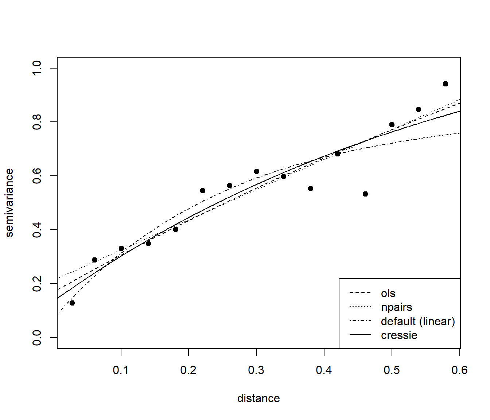

3.3 Ajuste de un modelo válido
Como ya se comentó anteriormente, en general los estimadores del variograma no pueden ser usados directamente en la predicción espacial; no son condicionalmente semidefinidos negativos y eso puede causar por ejemplo sistemas kriging inválidos o estimaciones negativas de la varianza kriging. Este problema normalmente se remedia buscando un modelo paramétrico válido que describa adecuadamente la dependencia espacial presente en los datos. Supongamos que \(P=\left\{ 2\gamma(\mathbf{h};\boldsymbol{\theta}):\boldsymbol{\theta}\in \Theta \right\}\), donde \(2\gamma(\mathbf{h};\boldsymbol{\theta})\) es un variograma válido en \(\mathbb{R}^{d}\) (normalmente isotrópico), es la familia parametrizada de variogramas escogida. Se trata de encontrar el mejor elemento de \(P\), para lo que se han propuesto diversos criterios de bondad de ajuste (ver p.e. Cressie, 1993, Sección 2.6). Entre ellos hay que destacar los basados en mínimos cuadrados y en máxima verosimilitud, descritos a continuación.
3.3.1 Estimación por mínimos cuadrados
Supongamos que \(2\gamma(\mathbf{h};\boldsymbol{\theta}_{0})\) es el variograma teórico y que \(\hat{\gamma}_{i} =\hat{\gamma}(\mathbf{h}_{i})\), \(i = 1,\ldots,K\), son las estimaciones del semivariograma obtenidas utilizando algún tipo de estimador piloto (p.e. alguno de los mostrados en la Sección 4.1.1). Normalmente, siguiendo las recomendaciones sugeridas por Journel y Huijbregts (1978, p. 194), solamente se consideran en el ajuste saltos menores o iguales que la mitad del máximo salto (i.e. \(\left\| \mathbf{h}_{i} \right\| \leq \frac{1}{2} \max \left\{ \left\| \mathbf{s}_{k} -\mathbf{s}_{l} \right\| \right\}\)); y, si se utiliza el estimador empírico (o uno similar), de forma que el número de aportaciones a cada estimación sea por lo menos de treinta (i.e. \(\left| N(\mathbf{h}_{i})\right| \geq 30\)). Habitualmente (e.g. Cressie, 1993, p. 96-97) la estimación por mínimos cuadrados de \(\boldsymbol{\theta}_{0}\) se obtiene al minimizar: \[\begin{equation} \left( \hat{\boldsymbol{\gamma}} - \boldsymbol{\gamma}(\boldsymbol{\theta})\right)^{\top } \mathbf{V}(\boldsymbol{\theta})\left( \hat{\boldsymbol{\gamma}} - \boldsymbol{\gamma}(\boldsymbol{\theta})\right), \tag{3.3} \end{equation}\] siendo \(\hat{\boldsymbol{\gamma}} =(\hat{\gamma}(\mathbf{h}_1),\ldots,\hat{\gamma} (\mathbf{h}_{K}))^\top\), \(\boldsymbol{\gamma}(\boldsymbol{\theta})=(\gamma(\mathbf{h}_1 ;\boldsymbol{\theta}),\ldots,\gamma(\mathbf{h}_{K} ;\boldsymbol{\theta}))^\top\) y \(\mathbf{V}(\boldsymbol{\theta})\) una matriz \(K\times K\) semidefinida positiva que puede depender de \(\boldsymbol{\theta}\), considerando alguno de los siguientes casos:
Mínimos cuadrados ordinarios (OLS): \(\mathbf{V}(\boldsymbol{\theta}) = \mathbf{I}_{K}\), la matriz identidad \(K\times K\).
Mínimos cuadrados ponderados (WLS): \(\mathbf{V}(\boldsymbol{\theta}) = \text{diag}(w_1 (\boldsymbol{\theta}),\ldots,w_{K}(\boldsymbol{\theta}))\), con \(w_{i}(\boldsymbol{\theta})\geq 0\), \(i=1,\ldots,K\). Normalmente se suele tomar estos pesos inversamente proporcionales a \(Var(\hat{\gamma}(\mathbf{h}_{i}))\).
Mínimos cuadrados generalizados (GLS): \(\mathbf{V}(\boldsymbol{\theta})=\boldsymbol{\Sigma}_{\hat{\boldsymbol{\gamma}}} (\boldsymbol{\theta})^{-1}\), la inversa de la matriz de covarianzas (asintótica) de \(\hat{\boldsymbol{\gamma}}\) obtenida suponiendo que el variograma teórico es \(2\gamma(\mathbf{h};\boldsymbol{\theta})\).
Es importante señalar que al utilizar el criterio GLS el cálculo de la matriz de covarianzas \(\boldsymbol{\Sigma}_{\hat{\boldsymbol{\gamma}}} (\boldsymbol{\theta})\) generalmente no resulta fácil (por ejemplo en Cressie 1993, p. 96, se tienen las expresiones para el estimador empírico y el estimador robusto, suponiendo normalidad). Esto produce que la minimización de la función objetivo (3.3) sea computacionalmente prohibitiva en muchos casos. El método de mínimos cuadrados ponderados puede verse como un compromiso entre la eficiencia del método de GLS y la simplicidad del método de OLS. Además, suponiendo normalidad y que el variograma teórico es \(2\gamma(\mathbf{h};\boldsymbol{\theta})\), Cressie (1985) probó que: \[Var(\hat{\gamma}(\mathbf{h}_{i}))\simeq 2\dfrac{\gamma(\mathbf{h}_{i} ;\boldsymbol{\theta})^2 }{\left| N(\mathbf{h}_{i})\right| },\] en el caso del estimador empírico; y para el estimador robusto: \[Var(\tilde{\gamma}(\mathbf{h}_{i}))\simeq 2.885\dfrac{\gamma (\mathbf{h}_{i} ;\boldsymbol{\theta})^2 }{\left| N(\mathbf{h}_{i})\right| },\] siendo esta aproximación incluso mejor que en el caso anterior. Proponiendo en estos casos la minimización de: \[\sum\limits_{i=1}^{K} w_{i}(\boldsymbol{\theta}) \left( \hat{\gamma}(\mathbf{h}_{i}) - \gamma(\mathbf{h}_{i};\boldsymbol{\theta}) \right)^2,\] siendo \(w_{i}(\boldsymbol{\theta}) = \left| N(\mathbf{h}_{i})\right| /\gamma(\mathbf{h}_{i} ;\boldsymbol{\theta})^2\), como aproximación al criterio WLS.
Estos métodos de ajuste tiene unas propiedades interesantes, cuanto mayor sea \(\left| N(\mathbf{h}_{i})\right|\) mayor peso recibe el residuo en el salto \(\mathbf{h}_{i}\) y además, cuanto más pequeño sea el valor del variograma teórico mayor peso recibe también el residuo correspondiente. Por este motivo, los saltos próximos al origen típicamente reciben mayor peso con lo que se consigue un buen ajuste del modelo de variograma cerca del origen (esto es especialmente importante; ver p.e. Stein, 1988, y comentarios en la Sección 4.X). Adicionalmente estos métodos pueden ser implementados fácilmente en la práctica (de forma similar al OLS).
Aunque para obtener las expresiones (o aproximaciones) de las varianzas y covarianzas de las estimaciones piloto se supone habitualmente que la distribución de los datos es normal, se puede probar fácilmente que los procedimientos de ajuste obtenidos son también válidos para el caso de datos normales transformados (ver p.e. Cressie, 1993, p. 98). Esta es una de las principales ventajas de los métodos WLS o GLS frente a otras alternativas (como los métodos basados en máxima verosimilitud); como utilizan solamente la estructura de segundo orden (asintótica) del estimador del variograma, no es necesario hacer suposiciones sobre la distribución completa de los datos14.
Como comentario final, en la función objetivo (3.3) de los criterios WLS y GLS anteriores, la matriz de pesos utilizada en el ajuste \(\mathbf{V}(\boldsymbol{\theta})\) depende también del parámetro sobre el que se realiza la minimización (y al minimizar (3.3) en cierto sentido se están maximizando también las varianzas), por lo que puede ser preferible utilizar un algoritmo iterativo. Por ejemplo comenzar con pesos OLS (o WLS con \(w_{i} = \left| N(\mathbf{h}_{i})\right| / \| \mathbf{h}_{i} \|^2\)) y posteriormente en cada etapa \(k\) obtener una nueva aproximación \(\hat{\boldsymbol{\theta}}_{0}^{(k)}\) al minimizar: \[\left( \hat{\boldsymbol{\gamma}} - \boldsymbol{\gamma}(\boldsymbol{\theta})\right)^{\top } \mathbf{V}(\hat{\boldsymbol{\theta}}_{0}^{(k-1)})\left( \hat{\boldsymbol{\gamma}} - \boldsymbol{\gamma}(\boldsymbol{\theta})\right),\] repitiendo este proceso hasta convergencia (realmente muchos de los algoritmos diseñados para el ajuste por mínimos cuadrados proceden de esta forma).
En gstat el ajuste OLS y WLS se realiza mediante la función:
fit.variogram(object, model, fit.sills = TRUE, fit.ranges = TRUE,
fit.method = 7, fit.kappa = FALSE, ...)object: semivariograma empírico, obtenido con la funciónvariogram().model: modelo de semivariograma, generado con la funciónvgm().fit.sills,fit.ranges,fit.kappa: determinan si se ajustan los correspondientes parámetros (TRUE) o se mantienen fijos (FALSE).fit.method: selección de los pesos en el criterio WLS.fit.method = 6: \(w_{i} = 1\), OLS.fit.method = 1: \(w_{i} = \left| N(\mathbf{h}_{i})\right|\).fit.method = 7: \(w_{i} = \left| N(\mathbf{h}_{i})\right| / \| \mathbf{h}_{i} \|^2\).fit.method = 2: \(w_{i} = \left| N(\mathbf{h}_{i})\right| /\gamma(\mathbf{h}_{i} ;\boldsymbol{\theta})^2\).
Los parámetros iniciales se fijan a los establecidos en model. Si alguno es desconocido (NA), le asigna un valor por defecto:
- el rango se establece a 1/3 de la distancia máxima del variograma empírico,
- al umbral parcial se le asigna el promedio de los últimos 5 valores del variograma empírico,
- y el efecto nugget (siempre que haya sido establecido explícitamente con
nugget = NA) se toma como la media de los tres primeros valores del variograma empírico.
Como ejemplo, a continuación se ajusta un modelo exponencial al variograma empírico calculado en la Sección 3.1, mediante OLS y WLS con diferentes pesos:
modelo <- vgm(model = "Exp", nugget = NA) # Valores iniciales por defecto, incluyendo nugget
# modelo <- vgm(psill = 0.6, model = "Exp", range = 0.2, nugget = 0.0) # Valores iniciales
fit.ols <- fit.variogram(vario, model = modelo, fit.method = 6)
# fit.npairs <- fit.variogram(vario, model = modelo, fit.method = 1) # Warning: No convergence
fit.npairs <- fit.variogram(vario, model = fit.ols, fit.method = 1)## Warning in fit.variogram(vario, model = fit.ols, fit.method = 1): No convergence
## after 200 iterations: try different initial values?fit.lin <- fit.variogram(vario, model = modelo, fit.method = 7)
fit.cressie <- fit.variogram(vario, model = fit.lin, fit.method = 2)
# Representar:
# Cuidado con plot.variogramModel() si se pretende añadir elementos
plot(vario$dist, vario$gamma, xlab = "distance", ylab = "semivariance",
pch = 19, ylim = c(0, 1))
lines(variogramLine(fit.ols, maxdist = 0.6), lty = 2)
lines(variogramLine(fit.npairs, maxdist = 0.6), lty = 3)
lines(variogramLine(fit.lin, maxdist = 0.6), lty = 4)
lines(variogramLine(fit.cressie, maxdist = 0.6))
legend("bottomright", c("ols", "npairs", "default (linear)", "cressie"), lty = c(2, 3, 4, 1))
# Parámetros estimados:
fit.cressie## model psill range
## 1 Nug 0.13495 0.0000000
## 2 Exp 1.15982 0.6403818# Error ajuste
attr(fit.cressie, "SSErr")## [1] 52.83535En gstat el ajuste GLS se podría realizar mediante la función:
fit.variogram.gls(formula, data, model, maxiter = 30, eps = .01,
trace = TRUE, ignoreInitial = TRUE, cutoff = Inf, plot = FALSE)Sin embargo, actualmente solo admite datos tipo Spatial* del paquete sp y además es habitual que aparezcan problemas computacionales, por lo que no se recomendaría su uso.
fit.variogram.gls(z ~ 1, as(datos, "Spatial"), modelo,
maxiter = 2, cutoff = 0.6, plot = TRUE)
# Error in if (any(model$range < 0)) { : missing value where TRUE/FALSE needed3.3.2 Modelado del variograma en procesos no estacionarios
Como ya se comentó en la introducción de este capítulo, si no se puede asumir que la tendencia es constante no es apropiado utilizar directamente los estimadores del semivariograma mostrados en la Sección 3.1. Por ejemplo, considerando el modelo lineal (1.2) de la Sección 1.2.1 (el modelo del kriging universal, Sección 4.X; que emplearemos en el resto de este capítulo), tendríamos que: \[E(Z(\mathbf{s}_1)-Z(\mathbf{s}_{2}))^2 =2\gamma(\mathbf{s}_1 -\mathbf{s}_{2}) + \left( \sum\limits_{j=0}^{p}\beta_{j} \left( X_{j} (\mathbf{s}_1)-X_{j}(\mathbf{s}_{2})\right) \right)^2.\] Muchas veces, cuando las estimaciones experimentales del semivariograma aparentan no estar acotadas (e.g. Figura 3.5 izquierda), es debido a que la tendencia no está especificada correctamente.
El procedimiento habitual en geoestadística es eliminar la tendencia y estimar el variograma a partir de los residuos. Por ejemplo, en este caso, podríamos considerar los residuos de un ajuste OLS de la tendencia:
\[\mathbf{r}_{ols} =\mathbf{Z}-\mathbf{X}\hat{\boldsymbol{\beta}}_{ols} =\left( \mathbf{I}_{n}
- (\mathbf{X}^{\top}\mathbf{X})^{-1}\mathbf{X}^{\top} \right)\mathbf{Z}.\]
Esto se puede hacer con la función variogram() del paquete gstat especificando la fórmula del modelo como primer argumento (ver Figura 3.5 derecha).
Como ejemplo consideraremos los datos del acuífero Wolfcamp:
load("datos/aquifer.RData")
library(sf)
aquifer$head <- aquifer$head/100 # en cientos de pies
aquifer_sf <- st_as_sf(aquifer, coords = c("lon", "lat"), remove = FALSE, agr = "constant")
# maxlag <- 0.5*sqrt(sum(diff(matrix(st_bbox(aquifer_sf), nrow = 2, byrow = TRUE))^2))
vario.est <- variogram(head ~ 1, aquifer_sf, cutoff = 150)
vario.resid <- variogram(head ~ lon + lat, aquifer_sf, cutoff = 150)
oldpar <- par(mfrow = c(1, 2))
# plot(vario.est) # no compatible con mfrow
with(vario.est, plot(dist, gamma, xlab = "distance", ylab = "semivariance"))
# plot(vario.resid)
with(vario.resid, plot(dist, gamma, xlab = "distance", ylab = "semivariance"))Figura 3.5: Semivariograma empírico obtenido asumiendo media constante (izquierda) y a partir de los residuos de un ajuste lineal de la tendencia (derecha), empleando los datos del acuífero Wolfcamp.
par(oldpar)El ajuste por WLS se puede realizar también con la función fit.variogram():
modelo <- vgm(model = "Sph", nugget = NA) # Valores iniciales por defecto
# modelo <- vgm(psill = 3, model = "Sph", range = 75, nugget = 0)
fit.resid <- fit.variogram(vario.resid, modelo, fit.method = 2)
fit.resid## model psill range
## 1 Nug 1.095133 0.00000
## 2 Sph 3.044034 63.39438# Cuidado con plot.variogramModel() si se pretende añadir elementos
# plot(fit.resid, cutoff = 150, ylim = c(0, 4.5))
# with(vario.resid, points(dist, gamma))
with(vario.resid, plot(dist, gamma, xlab = "distance", ylab = "semivariance",
xlim = c(0, 150), ylim = c(0, 5)))
lines(variogramLine(fit.resid, maxdist = 150))Figura 3.6: Ajuste de un modelo esférico de semivariograma a las estimaciones empíricas obtenidas a partir de los residuos de un ajuste lineal de la tendencia, empleando los datos del acuífero Wolfcamp.
Sin embargo, para poder estimar la tendencia de forma eficiente sería necesario conocer la dependencia (i.e. conocer \(\gamma(\cdot)\)), que dependería a su vez de la estimación de la tendencia.
Para solventar este problema circular, Neuman y Jacobson (1984) propusieron una aproximación iterativa, empezar con el estimador OLS de \(\boldsymbol{\theta}\), estimar el variograma a partir de los residuos, ajustar un modelo de variograma válido, calcular el estimador GLS basado en el modelo ajustado y así sucesivamente hasta convergencia.
En la práctica este procedimiento suele converger en pocas iteraciones (normalmente menos de 5).
Sin embargo, en el paquete gstat solo se realiza una iteración (se reestimará la tendencia empleando GLS al calcular las predicciones kriging).
En el caso de variogramas no acotados, el proceso \(\varepsilon(\cdot)\) no sería estacionario de segundo orden, no está disponible la matriz \(\boldsymbol{\Sigma}\) y en principio sería imposible emplear GLS para estimar la tendencia. Sin embargo, normalmente se suele trabajar en un dominio acotado \(D\) y podemos encontrar una constante positiva \(A\) tal que \(C^{\ast }(\mathbf{h})= A-\gamma(\mathbf{h})\geq 0,\forall \mathbf{h}\in D\) (y por tanto esta función es un covariograma válido en ese dominio). La función \(C^{\ast }(\mathbf{h})\) se suele denominar pseudo-covariograma (o covarianza localmente equivalente; ver p.e. Chilès y Delfiner, 1999, Sección 4.6.2). Si utilizamos \(C^{\ast }(\mathbf{h})\) en lugar del covariograma en la estimación de la media (o en las ecuaciones del predictor del KU), la constante A se cancela y obtenemos los mismos resultados (sin embargo las varianzas si que dependen de esta constante).
Adicionalmente, habría que tener en cuenta también que la variabilidad de los residuos no es la de los errores teóricos (algo que normalmente se ignora). Para ilustrar este problema supongamos que el proceso de error \(\varepsilon(\cdot)\) es estacionario de segundo orden con covariograma conocido \(C(\cdot)\) de forma que podemos calcular el estimador lineal óptimo de \(\boldsymbol{\beta}\): \[\hat{\boldsymbol{\beta}}_{gls} =(\mathbf{X}^{\top}\boldsymbol{\Sigma}^{-1} \mathbf{X})^{-1} \mathbf{X}^{\top}\boldsymbol{\Sigma}^{-1} \mathbf{Z} = \mathbf{P}_{gls}\mathbf{Z},\] siendo \(\mathbf{P}_{gls}\) la matriz de proyección. Empleando este estimador obtenemos el vector de residuos: \[\mathbf{r} =\mathbf{Z}-\mathbf{X}\hat{\boldsymbol{\beta}}_{ols} =\left( \mathbf{I}_{n} - \mathbf{P}_{gls} \right)\mathbf{Z},\] cuya matriz de varianzas-covarianzas resulta ser: \[\begin{aligned} Var(\mathbf{r}) &=(\mathbf{I}_{n} -\mathbf{P}_{gls})\boldsymbol{\Sigma}(\mathbf{I}_{n} -\mathbf{P}_{gls})^\top \\ & = \boldsymbol{\Sigma} - \mathbf{X}(\mathbf{X}^\top\boldsymbol{\Sigma}^{-1} \mathbf{X})^{-1} \mathbf{X}^\top. \end{aligned}\] De donde se deduce que si utilizamos directamente los residuos, incluso procediendo de la forma más eficiente, se introduce un sesgo en la estimación de la dependencia espacial. Explícitamente, si denotamos por \(\hat{\mu}(\mathbf{s})\) la estimación GLS de la tendencia, puede verse que: \[\begin{aligned} C_{\mathbf{r}}(\mathbf{s}_{i} ,\mathbf{s}_{j}) &= Cov\left(Z(\mathbf{s}_{i})-\hat{\mu}(\mathbf{s}_{i}), Z(\mathbf{s}_{j} ) - \hat{\mu}(\mathbf{s}_{j})\right) \\ &= C(\mathbf{s}_{i} -\mathbf{s}_{j}) - Cov(\hat{\mu}(\mathbf{s}_{i} ), \hat{\mu}(\mathbf{s}_{j})), \end{aligned}\] y expresado en función del semivariograma: \[\gamma_{\mathbf{r}}(\mathbf{s}_{i} ,\mathbf{s}_{j}) = \gamma (\mathbf{s}_{i} -\mathbf{s}_{j})-\frac{1}{2} Var(\hat{\mu} (\mathbf{s}_{i})-\hat{\mu}(\mathbf{s}_{j})).\]
Por tanto al utilizar alguno de los estimadores mostrados anteriormente con los residuos estimados obtenemos estimaciones sesgadas del semivariograma teórico. Matheron (1971, pp. 152-155) ya notó que, por lo general, el sesgo del estimador del semivariograma es pequeño en los saltos próximos al origen, pero más sustancial en saltos grandes15. Parece ser que este problema provocó una desilusión con el kriging universal y la iniciativa hacia el kriging con funciones intrínsecamente estacionarias (ver p.e. Matheron, 1973; Cressie, 1993, Sección 5.4; o Chilès y Delfiner, 1999, cap. 4).
En cuanto a las consecuencias de que el estimador del variograma no sea insesgado en el kriging universal, hay que tener en cuenta que:
- Al ajustar un modelo de variograma por mínimos cuadrados ponderados o generalizados (Sección 3.3.1), automáticamente los saltos pequeños reciben mayor peso en el ajuste.
- Además si la predicción espacial se lleva a cabo con un criterio de vecindad, el variograma sólo es evaluado en saltos pequeños, donde se tiene una buena estimación y un buen ajuste.
- También hay que tener en cuenta el resultado de Stein (1988), i.e. para una predicción eficiente generalmente sólo es necesario capturar la conducta del variograma cerca del origen
Por lo anterior, el desencanto con el kriging universal ha sido prematuro, el efecto del sesgo del estimador del variograma sobre el predictor del kriging universal es pequeño.
Sin embargo la varianza del kriging universal se ve más afectada y es menor de lo que debería ser (para más detalles ver Cressie, 1993, pp. 296-299).
Adicionalmente se han propuesto alternativas a los métodos de ajuste basados en mínimos cuadrados que tienen en cuenta el sesgo en la estimación del variograma (e.g. Beckers y Bogaert, 1998; Fernandez-Casal y Francisco-Fernandez, 2014, función npsp::np.svariso.corr()).
Otra alternativa sería asumir normalidad y estimar ambos componentes de forma conjunta empleando alguno de los métodos basados en máxima verosimilitud descritos en la siguiente sección (que también tienen problemas de sesgo).
3.3.3 Estimación por máxima verosimilitud
La estimación por máxima verosimilitud (maximum likelihood, ML) es un método muy conocido en inferencia estadística paramétrica, aunque su uso en geoestadística ha sido relativamente reciente (a partir de mediados de los 80). Además la estimación ML tiene una conexión directa con la estimación Bayesiana (e.g. Handcock y Wallis, 1994) y el empleo de estas herramientas en estadística espacial ha experimentado un notable aumento en los últimos años (e.g. Wikle et al., 2019; Moraga, 2020).
Si suponemos que la distribución de los datos es normal: \[\mathbf{Z}\sim \mathcal{N}(\mathbf{X}\boldsymbol{\beta},\boldsymbol{\Sigma}),\] donde \(\boldsymbol{\Sigma}=\boldsymbol{\Sigma}(\boldsymbol{\theta})\) (utilizando la notación de secciones anteriores), se puede deducir fácilmente la expresión de la función de verosimilitud y obtener las estimaciones de los parámetros buscando los valores que la maximizan.
En este caso, la función de densidad de los datos es: \[f(\mathbf{z})=(2\pi )^{-\frac{n}{2} } \left| \boldsymbol{\Sigma} \right|^{-\frac{1}{2} } \exp \left\{ -\dfrac{1}{2}(\mathbf{z}-\mathbf{X}\boldsymbol{\beta})^\top \boldsymbol{\Sigma}^{-1}(\mathbf{z}-\mathbf{X}\boldsymbol{\beta})\right\}.\] Además en la mayoría de los casos podemos reparametrizar el covariograma16 de forma que: \[\boldsymbol{\Sigma}=\sigma^2 \mathbf{V}(\boldsymbol{\theta}),\] siendo \(\sigma^2\) la varianza desconocida (o umbral total), y se obtiene que la expresión del logaritmo negativo de la función de verosimilitud (negative log likelihood, NLL) es: \[\begin{aligned} \mathcal{L}(\boldsymbol{\theta},\boldsymbol{\beta},\sigma^2 \left| \mathbf{Z} \right.) & = \dfrac{n}{2} \ln (2\pi) + \dfrac{n}{2} \ln(\sigma^2) + \dfrac{1}{2} \ln \left| \mathbf{V}(\boldsymbol{\theta}) \right| \\ & + \ \dfrac{1}{2\sigma^2 }(\mathbf{Z}-\mathbf{X}\boldsymbol{\beta})^\top \mathbf{V}(\boldsymbol{\theta})^{-1}(\mathbf{Z}-\mathbf{X}\boldsymbol{\beta}), \end{aligned}\] donde \(\left| \mathbf{V}(\boldsymbol{\theta})\right|\) denota el determinante de la matriz \(\mathbf{V}(\boldsymbol{\theta})\). Las estimaciones de los parámetros \((\boldsymbol{\theta}, \boldsymbol{\beta}, \sigma^2)\) se obtendrán minimizando el NLL. Un resultado bien conocido es que el mínimo se obtiene, independientemente de \(\boldsymbol{\theta}\), para: \[\begin{equation} \begin{aligned} \hat{\boldsymbol{\beta}} & =(\mathbf{X}^\top\mathbf{V}(\boldsymbol{\theta})^{-1} \mathbf{X})^{-1} \mathbf{X}^\top\mathbf{V}(\boldsymbol{\theta})^{-1} \mathbf{Z}, \\ \hat{\sigma }^2 & =\dfrac{1}{n}(\mathbf{Z}-\mathbf{X}\hat{\boldsymbol{\beta}})^\top \mathbf{V}(\boldsymbol{\theta})^{-1}(\mathbf{Z}-\mathbf{X}\hat{\boldsymbol{\beta}}). \end{aligned} \tag{3.4} \end{equation}\] Por tanto la función a minimizar respecto a \(\boldsymbol{\theta}\) es: \[\mathcal{L}(\boldsymbol{\theta}\left| \mathbf{Z}\right. )=\mathcal{L}(\hat{\boldsymbol{\beta}} ,\boldsymbol{\theta},\hat{\sigma }^2 \left| \mathbf{Z}\right. ) = \dfrac{n}{2} \ln (2\pi ) + \dfrac{n}{2} \ln (\hat{\sigma }^2) + \dfrac{1}{2} \ln \left| \mathbf{V}(\boldsymbol{\theta})\right| +\dfrac{n}{2}.\] Para ello es necesario utilizar algoritmos de minimización no lineal multidimensional. Además está el problema de la posible multimodalidad de esta función (ver p.e. Mardia y Watkins, 1989), por tanto habría que asegurarse de que el algoritmo elegido no converge a un mínimo local. Si \(\hat{\boldsymbol{\theta}}\) es la estimación de \(\boldsymbol{\theta}\) obtenida al resolver este problema, sustituyendo en (3.4) se obtienen las estimaciones del resto de parámetros17.
Uno de los principales problemas de la estimación ML es que los estimadores de \(\sigma^2\) y \(\boldsymbol{\theta}\) pueden tener un sesgo considerable (especialmente cuando la tendencia no es constante), algo que es bastante conocido en la estimación de la varianza con datos independientes. Este problema se puede resolver (por lo menos en parte) utilizando una variante de este método.
El método de máxima verosimilitud restringida (restricted maximum likelihood, REML) se basa en la idea de filtrar los datos de forma que la distribución conjunta no dependa de \(\boldsymbol{\beta}\). Se trata de maximizar la verosimilitud de \(m=n-p-1\) contrastes de error linealmente independientes: \[\mathbf{Y}=\boldsymbol{\Lambda}\mathbf{Z},\] siendo \(\boldsymbol{\Lambda}\) una matriz \(m\times n\) de rango \(m\) y tal que \(\boldsymbol{\Lambda}\mathbf{X}=\mathbf{0}\) (i.e. \(E(\mathbf{Y}) = \mathbf{0}\)). Estas combinaciones lineales también se denominan habitualmente incrementos generalizados y, asumiendo normalidad, su distribución no depende de \(\boldsymbol{\beta}\): \[\mathbf{Y}\sim \mathcal{N}(\mathbf{0},\boldsymbol{\Lambda}\boldsymbol{\Sigma}\boldsymbol{\Lambda}^\top).\] De forma análoga al caso anterior podríamos obtener la correspondiente función de verosimilitud. Además, Harville (1974) demostró que las verosimilitudes de distintos incrementos generalizados son iguales salvo una constante y que se pueden obtener expresiones simplificadas seleccionando la matriz \(\boldsymbol{\Lambda}\) de forma que \(\boldsymbol{\Lambda}^\top \boldsymbol{\Lambda}=\mathbf{I}_{n} -\mathbf{X}(\mathbf{X^\top}\mathbf{X})^{-1} \mathbf{X}^\top\) y \(\boldsymbol{\Lambda}\boldsymbol{\Lambda}^\top =\mathbf{I}_{m}\), obteniéndose la siguiente expresión para el NLL:
\[\begin{aligned} \mathcal{L}(\boldsymbol{\theta}\left| \mathbf{Y}\right. ) & = \dfrac{m}{2} \ln (2\pi ) + \dfrac{m}{2} \ln (\hat{\sigma}_{Y}^2) -\dfrac{1}{2} \left| \mathbf{X}^\top\mathbf{X}\right| \\ & + \ \dfrac{1}{2} \left| \mathbf{X}^\top\mathbf{V}(\boldsymbol{\theta})^{-1} \mathbf{X}\right| +\dfrac{1}{2} \ln \left| \mathbf{V}(\boldsymbol{\theta})\right| +\dfrac{m}{2} ,\end{aligned}\] siendo: \[\hat{\sigma }_{Y}^2 =\dfrac{1}{m}(\mathbf{Z}-\mathbf{X}\hat{\boldsymbol{\beta}} )^\top \mathbf{V}(\boldsymbol{\theta})^{-1}(\mathbf{Z}-\mathbf{X}\hat{\boldsymbol{\beta}}).\]
En general se da por hecho que la estimación REML mejora, a veces significativamente, los resultados obtenidos con la estimación ML (sobre todo si \(p\) es grande comparado con \(n\)). En numerosos estudios de simulación (e.g. Zimmerman y Zimmerman, 1991; Fernández-Casal et al., 2003b) se ha observado que el sesgo en las estimaciones de los parámetros del variograma es en general menor.
En gstat el ajuste mediante REML se podría realizar empleando la función:
fit.variogram.reml(formula, locations, data, model, degree = 0, ...)Sin embargo, aparentemente el método no está bien implementado (emplea formula para un ajuste OLS y después, en el código C interno, considera una tendencia polinómica en las coordenadas determinada por degree), actualmente solo admite datos tipo Spatial* del paquete sp y además es habitual que aparezcan problemas computacionales, por lo que no se recomendaría su uso.
model <- vgm(psill = 3, model = "Sph", range = 75, nugget = 0)
fit.variogram.reml(head ~ 1, data = as(aquifer_sf, "Spatial"), model = model, degree = 1)## model psill range
## 1 Nug -0.7976219 0
## 2 Sph 12.5397527 75Como aparece en la ayuda de esta función, es preferible usar el paquete geoR (ver Sección B.3.2 del apéndice; también se podría emplear el paquete nlme), empleando la función geoR::likfit() para el ajuste y posteriormente as.vgm.variomodel() para convertir el modelo ajustado a un objeto de gstat.
geor.models <- c(Exp = "exponential", Sph = "spherical", Cir = "circular",
Gau = "gaussian", Mat = "matern", Pow = "power", Nug = "nugget",
Lin = "linear")
pars.ini <- c(psill = 3, range = 75, nugget = 0, kappa = 0.5)
res <- geoR::likfit(coords = st_coordinates(aquifer_sf), data = aquifer_sf$head,
lik.method = "REML", trend = "1st", cov.model = geor.models["Sph"],
ini.cov.pars = pars.ini[1:2], nugget = pars.ini[3], kappa = pars.ini[4])## kappa not used for the spherical correlation function
## ---------------------------------------------------------------
## likfit: likelihood maximisation using the function optim.
## likfit: Use control() to pass additional
## arguments for the maximisation function.
## For further details see documentation for optim.
## likfit: It is highly advisable to run this function several
## times with different initial values for the parameters.
## likfit: WARNING: This step can be time demanding!
## ---------------------------------------------------------------
## likfit: end of numerical maximisation.summary(res)## Summary of the parameter estimation
## -----------------------------------
## Estimation method: restricted maximum likelihood
##
## Parameters of the mean component (trend):
## beta0 beta1 beta2
## 26.7704 -0.0701 -0.0634
##
## Parameters of the spatial component:
## correlation function: spherical
## (estimated) variance parameter sigmasq (partial sill) = 4.545
## (estimated) cor. fct. parameter phi (range parameter) = 79.16
## anisotropy parameters:
## (fixed) anisotropy angle = 0 ( 0 degrees )
## (fixed) anisotropy ratio = 1
##
## Parameter of the error component:
## (estimated) nugget = 1.191
##
## Transformation parameter:
## (fixed) Box-Cox parameter = 1 (no transformation)
##
## Practical Range with cor=0.05 for asymptotic range: 79.16084
##
## Maximised Likelihood:
## log.L n.params AIC BIC
## "-160.4" "6" "332.7" "347.4"
##
## non spatial model:
## log.L n.params AIC BIC
## "-174.5" "4" "357.1" "366.8"
##
## Call:
## geoR::likfit(coords = st_coordinates(aquifer_sf), data = aquifer_sf$head,
## trend = "1st", ini.cov.pars = pars.ini[1:2], nugget = pars.ini[3],
## kappa = pars.ini[4], cov.model = geor.models["Sph"], lik.method = "REML")as.vgm.variomodel(res)## model psill range
## 1 Nug 1.191129 0.00000
## 2 Sph 4.544502 79.16084La distribución y eficiencia asintótica de los estimadores mínimo cuadráticos ha sido estudiada por Lahiri et al. (2003), demostrando su consistencia y normalidad asintótica bajo condiciones muy generales.↩︎
Para un caso particular, Cressie (1993, pp. 166-167) observó que los residuos basados en el estimador GLS dan lugar a un estimador del variograma con sesgo negativo y cuadrático en h.↩︎
Por ejemplo en el caso de los semivariogramas mostrados en la Sección 3.2.1, si \(c_{0}\) es el efecto nugget y \(c_1\) el umbral parcial, en lugar de éstos parámetros se considerarían la varianza (umbral) \(\sigma^2 =c_{0} +c_1\) y la proporción de nugget en el umbral total \(c_{0}^{\ast} =c_{0} /(c_{0} +c_1)\) (lo que equivale a suponer en las expresiones del covariograma que \(c_1 =1\) y \(0 \leq c_{0} \leq 1\)).↩︎
El comportamiento asintótico (bajo dominio creciente) de estos estimadores ha sido estudiado por Mardia y Marshal (1984), dando condiciones (no muy fáciles de chequear en la práctica) para su consistencia y normalidad asintótica (ver también Cressie, 1993, Sección 7.3.1).↩︎